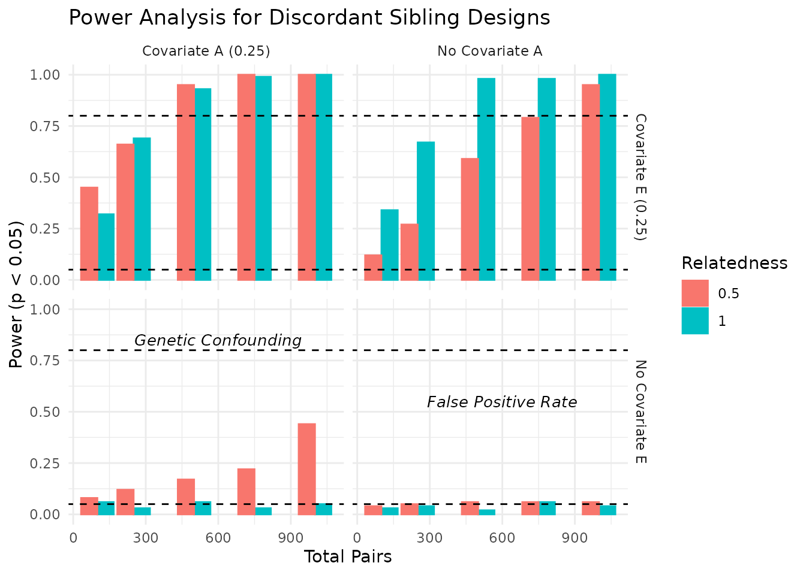
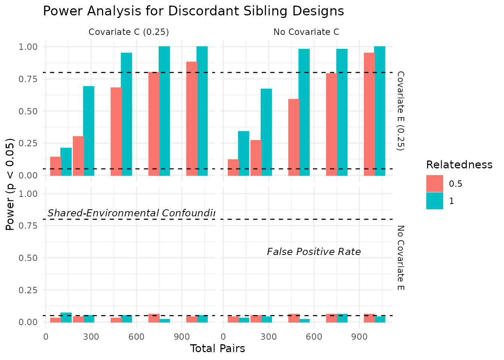

Introduction
This vignette demonstrates how to conduct simulation-based power analysis for discordant sibling designs. These designs estimate causal effects by comparing differences between genetically related individuals, controlling for shared background.
We simulate multivariate phenotypes using the kinsim()
function, fit regression models of interest, and calculate empirical
power across multiple design conditions.
Function Overview: kinsim()
The kinsim() function is designed to simulate data for
kinship studies. It generates paired multivariate data informed by
biometric models (ACE), supporting variable relatedness levels and
covariance structures.
Key Arguments
| Argument | Description |
|---|---|
r_all |
Vector of genetic relatedness values (e.g., 1,
0.5, 0.25, 0) |
npergroup_all |
Sample sizes for each level of relatedness |
ace_list |
Matrix of ACE parameters per variable (rows = traits; columns = a, c, e) |
cov_a, cov_c, cov_e
|
Cross-variable covariance for A, C, and E components |
mu_list |
Mean values for each phenotype |
r_vector |
Optional: pairwise relatedness at the observation level |
Example Usage
Step 1: Define Simulation Grid
We define a grid of simulation conditions, varying genetic relatedness, ACE variance components, and genetic correlations.
# Libraries
library(NlsyLinks)
library(discord)
library(utils)
library(tidyverse)
library(ggplot2)
# Set random seed for reproducibility
set.seed(1492)
# Disable scientific notation for clarity
options(scipen = 999)
conditions <- expand.grid(
total_pairs = c(100, 250, 500, 750, 1000),
relatedness = c(1, .5),
cov_a = c(0, 0.25),
cov_c = c(0, 0.25),
cov_e = c(0, 0.25),
ace_a = c(1),
ace_c = c(1),
ace_e = c(1)
)Step 2: Run Simulations
For each condition, we simulate 100 replications of fitting
discordant sibling models. We have kept the number of trials low for
demonstration purposes, but you can increase n_trials for
more robust power estimates.
set.seed(1492) # Set seed for reproducibility
n_trials <- 100
FAST <- FALSE # Set to FALSE for slower, more detailed analysis
results_list <- list()
name.results <- c("coef_xdiff", "p_xdiff", "r.squared")
for (cond in seq_along(conditions)) {
current <- conditions[cond, ]
temp_results <- matrix(NA, nrow = n_trials, ncol = length(name.results))
colnames(temp_results) <- name.results
for (i in 1:n_trials) {
trial <- kinsim(
r_vector = rep(current$relatedness, each = current$total_pairs),
npg_all = current$total_pairs,
ace_all = c(current$ace_a, current$ace_c, current$ace_e),
cov_a = current$cov_a,
cov_c = current$cov_c,
cov_e = current$cov_e,
variables = 2
)
extract <- data.frame(
id = trial$id, r = trial$r,
y_s1 = trial$y1_1, y_s2 = trial$y1_2,
x_s1 = trial$y2_1, x_s2 = trial$y2_2
)
if (FAST == TRUE) {
# faster
# double enter the data
extract2 <- rbind(
transform(extract,
y_s1 = y_s2, y_s2 = y_s1,
x_s1 = x_s2, x_s2 = x_s1
),
extract
)
extract2$y_diff <- extract2$y_s1 - extract2$y_s2
extract2$x_diff <- extract2$x_s1 - extract2$x_s2
extract2$x_bar <- (extract2$x_s1 + extract2$x_s2) / 2
extract2$y_bar <- (extract2$y_s1 + extract2$y_s2) / 2
# select pair with ydiff > 0
extract3 <- extract2[extract2$y_diff > 0, ]
fit <- tryCatch(
lm(y_diff ~ x_bar + y_bar + x_diff, data = extract3),
error = function(e) {
return(NULL)
}
)
}
# slower
if (FAST == FALSE) {
fit <- tryCatch(
discord_regression(
data = extract, outcome = "y", predictors = "x",
id = "id",
sex = NULL,
race = NULL,
fast = TRUE
),
error = function(e) {
return(NULL)
}
)
}
if (!is.null(fit)) {
sm <- summary(fit)
temp_results[i, "coef_xdiff"] <- coef(sm)["x_diff", "Estimate"]
temp_results[i, "p_xdiff"] <- coef(sm)["x_diff", "Pr(>|t|)"]
temp_results[i, "r.squared"] <- sm$r.squared
}
}
results_list[[cond]] <- as.data.frame(temp_results)
}Step 3: Summarize Power
Our final step is to summarize the power across all conditions. We
calculate the proportion of trials where the p-value for the difference
in means (p_xdiff) is less than 0.05, and we also report
the median R-squared value from the regression models. Note that we’ve
limited the number of trials to 10 for demonstration purposes, but you
can (and should) increase this for more robust estimates.
Step 4: Visualize Power
We can visualize the power estimates across different conditions. The plots below show the power estimates for each condition, including the total number of pairs, relatedness level, covariate settings, and the median R-squared value from the regression models. As expected, power increases with the number of pairs and is influenced by the relatedness level and covariate settings. In the plots below, we visualize the power estimates across different conditions, focusing on the impact of covariates and relatedness levels.

Power Table
The table below summarizes the power estimates across different
conditions. The power_xdiff column indicates the proportion
of trials where the p-value for the difference in means
(p_xdiff) is less than 0.05, and the median_r2
column reports the median R-squared value from the regression
models.
| total_pairs | relatedness | cov_a | cov_c | cov_e | ace_a | ace_c | ace_e | power_xdiff | median_r2 |
|---|---|---|---|---|---|---|---|---|---|
| 100 | 1.0 | No Covariate A | No Covariate C | No Covariate E | 1 | 1 | 1 | 0.03 | 0.0201218 |
| 250 | 1.0 | No Covariate A | No Covariate C | No Covariate E | 1 | 1 | 1 | 0.04 | 0.0089694 |
| 500 | 1.0 | No Covariate A | No Covariate C | No Covariate E | 1 | 1 | 1 | 0.02 | 0.0045342 |
| 750 | 1.0 | No Covariate A | No Covariate C | No Covariate E | 1 | 1 | 1 | 0.06 | 0.0038589 |
| 1000 | 1.0 | No Covariate A | No Covariate C | No Covariate E | 1 | 1 | 1 | 0.04 | 0.0018504 |
| 100 | 0.5 | No Covariate A | No Covariate C | No Covariate E | 1 | 1 | 1 | 0.04 | 0.0238725 |
| 250 | 0.5 | No Covariate A | No Covariate C | No Covariate E | 1 | 1 | 1 | 0.05 | 0.0105100 |
| 500 | 0.5 | No Covariate A | No Covariate C | No Covariate E | 1 | 1 | 1 | 0.06 | 0.0056736 |
| 750 | 0.5 | No Covariate A | No Covariate C | No Covariate E | 1 | 1 | 1 | 0.03 | 0.0201218 |
| 1000 | 0.5 | No Covariate A | No Covariate C | No Covariate E | 1 | 1 | 1 | 0.04 | 0.0089694 |
| 100 | 1.0 | Covariate A (0.25) | No Covariate C | No Covariate E | 1 | 1 | 1 | 0.02 | 0.0045342 |
| 250 | 1.0 | Covariate A (0.25) | No Covariate C | No Covariate E | 1 | 1 | 1 | 0.06 | 0.0038589 |
| 500 | 1.0 | Covariate A (0.25) | No Covariate C | No Covariate E | 1 | 1 | 1 | 0.04 | 0.0018504 |
| 750 | 1.0 | Covariate A (0.25) | No Covariate C | No Covariate E | 1 | 1 | 1 | 0.04 | 0.0238725 |
| 1000 | 1.0 | Covariate A (0.25) | No Covariate C | No Covariate E | 1 | 1 | 1 | 0.05 | 0.0105100 |
| 100 | 0.5 | Covariate A (0.25) | No Covariate C | No Covariate E | 1 | 1 | 1 | 0.06 | 0.0056736 |
| 250 | 0.5 | Covariate A (0.25) | No Covariate C | No Covariate E | 1 | 1 | 1 | 0.03 | 0.0201218 |
| 500 | 0.5 | Covariate A (0.25) | No Covariate C | No Covariate E | 1 | 1 | 1 | 0.04 | 0.0089694 |
| 750 | 0.5 | Covariate A (0.25) | No Covariate C | No Covariate E | 1 | 1 | 1 | 0.02 | 0.0045342 |
| 1000 | 0.5 | Covariate A (0.25) | No Covariate C | No Covariate E | 1 | 1 | 1 | 0.06 | 0.0038589 |
| 100 | 1.0 | No Covariate A | Covariate C (0.25) | No Covariate E | 1 | 1 | 1 | 0.04 | 0.0018504 |
| 250 | 1.0 | No Covariate A | Covariate C (0.25) | No Covariate E | 1 | 1 | 1 | 0.04 | 0.0238725 |
| 500 | 1.0 | No Covariate A | Covariate C (0.25) | No Covariate E | 1 | 1 | 1 | 0.05 | 0.0105100 |
| 750 | 1.0 | No Covariate A | Covariate C (0.25) | No Covariate E | 1 | 1 | 1 | 0.06 | 0.0056736 |
| 1000 | 1.0 | No Covariate A | Covariate C (0.25) | No Covariate E | 1 | 1 | 1 | 0.03 | 0.0201218 |
| 100 | 0.5 | No Covariate A | Covariate C (0.25) | No Covariate E | 1 | 1 | 1 | 0.04 | 0.0089694 |
| 250 | 0.5 | No Covariate A | Covariate C (0.25) | No Covariate E | 1 | 1 | 1 | 0.02 | 0.0045342 |
| 500 | 0.5 | No Covariate A | Covariate C (0.25) | No Covariate E | 1 | 1 | 1 | 0.06 | 0.0038589 |
| 750 | 0.5 | No Covariate A | Covariate C (0.25) | No Covariate E | 1 | 1 | 1 | 0.04 | 0.0018504 |
| 1000 | 0.5 | No Covariate A | Covariate C (0.25) | No Covariate E | 1 | 1 | 1 | 0.04 | 0.0238725 |
| 100 | 1.0 | Covariate A (0.25) | Covariate C (0.25) | No Covariate E | 1 | 1 | 1 | 0.05 | 0.0105100 |
| 250 | 1.0 | Covariate A (0.25) | Covariate C (0.25) | No Covariate E | 1 | 1 | 1 | 0.06 | 0.0056736 |
| 500 | 1.0 | Covariate A (0.25) | Covariate C (0.25) | No Covariate E | 1 | 1 | 1 | 0.03 | 0.0201218 |
| 750 | 1.0 | Covariate A (0.25) | Covariate C (0.25) | No Covariate E | 1 | 1 | 1 | 0.04 | 0.0089694 |
| 1000 | 1.0 | Covariate A (0.25) | Covariate C (0.25) | No Covariate E | 1 | 1 | 1 | 0.02 | 0.0045342 |
| 100 | 0.5 | Covariate A (0.25) | Covariate C (0.25) | No Covariate E | 1 | 1 | 1 | 0.06 | 0.0038589 |
| 250 | 0.5 | Covariate A (0.25) | Covariate C (0.25) | No Covariate E | 1 | 1 | 1 | 0.04 | 0.0018504 |
| 500 | 0.5 | Covariate A (0.25) | Covariate C (0.25) | No Covariate E | 1 | 1 | 1 | 0.04 | 0.0238725 |
| 750 | 0.5 | Covariate A (0.25) | Covariate C (0.25) | No Covariate E | 1 | 1 | 1 | 0.05 | 0.0105100 |
| 1000 | 0.5 | Covariate A (0.25) | Covariate C (0.25) | No Covariate E | 1 | 1 | 1 | 0.06 | 0.0056736 |
| 100 | 1.0 | No Covariate A | No Covariate C | Covariate E (0.25) | 1 | 1 | 1 | 0.03 | 0.0201218 |
| 250 | 1.0 | No Covariate A | No Covariate C | Covariate E (0.25) | 1 | 1 | 1 | 0.04 | 0.0089694 |
| 500 | 1.0 | No Covariate A | No Covariate C | Covariate E (0.25) | 1 | 1 | 1 | 0.02 | 0.0045342 |
| 750 | 1.0 | No Covariate A | No Covariate C | Covariate E (0.25) | 1 | 1 | 1 | 0.06 | 0.0038589 |
| 1000 | 1.0 | No Covariate A | No Covariate C | Covariate E (0.25) | 1 | 1 | 1 | 0.04 | 0.0018504 |
| 100 | 0.5 | No Covariate A | No Covariate C | Covariate E (0.25) | 1 | 1 | 1 | 0.04 | 0.0238725 |
| 250 | 0.5 | No Covariate A | No Covariate C | Covariate E (0.25) | 1 | 1 | 1 | 0.05 | 0.0105100 |
| 500 | 0.5 | No Covariate A | No Covariate C | Covariate E (0.25) | 1 | 1 | 1 | 0.06 | 0.0056736 |
| 750 | 0.5 | No Covariate A | No Covariate C | Covariate E (0.25) | 1 | 1 | 1 | 0.03 | 0.0201218 |
| 1000 | 0.5 | No Covariate A | No Covariate C | Covariate E (0.25) | 1 | 1 | 1 | 0.04 | 0.0089694 |
| 100 | 1.0 | Covariate A (0.25) | No Covariate C | Covariate E (0.25) | 1 | 1 | 1 | 0.02 | 0.0045342 |
| 250 | 1.0 | Covariate A (0.25) | No Covariate C | Covariate E (0.25) | 1 | 1 | 1 | 0.06 | 0.0038589 |
| 500 | 1.0 | Covariate A (0.25) | No Covariate C | Covariate E (0.25) | 1 | 1 | 1 | 0.04 | 0.0018504 |
| 750 | 1.0 | Covariate A (0.25) | No Covariate C | Covariate E (0.25) | 1 | 1 | 1 | 0.04 | 0.0238725 |
| 1000 | 1.0 | Covariate A (0.25) | No Covariate C | Covariate E (0.25) | 1 | 1 | 1 | 0.05 | 0.0105100 |
| 100 | 0.5 | Covariate A (0.25) | No Covariate C | Covariate E (0.25) | 1 | 1 | 1 | 0.06 | 0.0056736 |
| 250 | 0.5 | Covariate A (0.25) | No Covariate C | Covariate E (0.25) | 1 | 1 | 1 | 0.03 | 0.0201218 |
| 500 | 0.5 | Covariate A (0.25) | No Covariate C | Covariate E (0.25) | 1 | 1 | 1 | 0.04 | 0.0089694 |
| 750 | 0.5 | Covariate A (0.25) | No Covariate C | Covariate E (0.25) | 1 | 1 | 1 | 0.02 | 0.0045342 |
| 1000 | 0.5 | Covariate A (0.25) | No Covariate C | Covariate E (0.25) | 1 | 1 | 1 | 0.06 | 0.0038589 |
| 100 | 1.0 | No Covariate A | Covariate C (0.25) | Covariate E (0.25) | 1 | 1 | 1 | 0.04 | 0.0018504 |
| 250 | 1.0 | No Covariate A | Covariate C (0.25) | Covariate E (0.25) | 1 | 1 | 1 | 0.04 | 0.0238725 |
| 500 | 1.0 | No Covariate A | Covariate C (0.25) | Covariate E (0.25) | 1 | 1 | 1 | 0.05 | 0.0105100 |
| 750 | 1.0 | No Covariate A | Covariate C (0.25) | Covariate E (0.25) | 1 | 1 | 1 | 0.06 | 0.0056736 |
| 1000 | 1.0 | No Covariate A | Covariate C (0.25) | Covariate E (0.25) | 1 | 1 | 1 | 0.03 | 0.0201218 |
| 100 | 0.5 | No Covariate A | Covariate C (0.25) | Covariate E (0.25) | 1 | 1 | 1 | 0.04 | 0.0089694 |
| 250 | 0.5 | No Covariate A | Covariate C (0.25) | Covariate E (0.25) | 1 | 1 | 1 | 0.02 | 0.0045342 |
| 500 | 0.5 | No Covariate A | Covariate C (0.25) | Covariate E (0.25) | 1 | 1 | 1 | 0.06 | 0.0038589 |
| 750 | 0.5 | No Covariate A | Covariate C (0.25) | Covariate E (0.25) | 1 | 1 | 1 | 0.04 | 0.0018504 |
| 1000 | 0.5 | No Covariate A | Covariate C (0.25) | Covariate E (0.25) | 1 | 1 | 1 | 0.04 | 0.0238725 |
| 100 | 1.0 | Covariate A (0.25) | Covariate C (0.25) | Covariate E (0.25) | 1 | 1 | 1 | 0.05 | 0.0105100 |
| 250 | 1.0 | Covariate A (0.25) | Covariate C (0.25) | Covariate E (0.25) | 1 | 1 | 1 | 0.06 | 0.0056736 |
| 500 | 1.0 | Covariate A (0.25) | Covariate C (0.25) | Covariate E (0.25) | 1 | 1 | 1 | 0.03 | 0.0201218 |
| 750 | 1.0 | Covariate A (0.25) | Covariate C (0.25) | Covariate E (0.25) | 1 | 1 | 1 | 0.04 | 0.0089694 |
| 1000 | 1.0 | Covariate A (0.25) | Covariate C (0.25) | Covariate E (0.25) | 1 | 1 | 1 | 0.02 | 0.0045342 |
| 100 | 0.5 | Covariate A (0.25) | Covariate C (0.25) | Covariate E (0.25) | 1 | 1 | 1 | 0.06 | 0.0038589 |
| 250 | 0.5 | Covariate A (0.25) | Covariate C (0.25) | Covariate E (0.25) | 1 | 1 | 1 | 0.04 | 0.0018504 |
| 500 | 0.5 | Covariate A (0.25) | Covariate C (0.25) | Covariate E (0.25) | 1 | 1 | 1 | 0.04 | 0.0238725 |
| 750 | 0.5 | Covariate A (0.25) | Covariate C (0.25) | Covariate E (0.25) | 1 | 1 | 1 | 0.05 | 0.0105100 |
| 1000 | 0.5 | Covariate A (0.25) | Covariate C (0.25) | Covariate E (0.25) | 1 | 1 | 1 | 0.06 | 0.0056736 |
Conclusion
This vignette demonstrates how to conduct a simulation-based power
analysis for discordant sibling designs using the discord
package. By varying genetic relatedness, ACE variance components, and
covariate settings, we can assess the power of our designs to detect
causal effects. The results highlight the importance of sample size and
relatedness level in achieving sufficient power for these analyses.